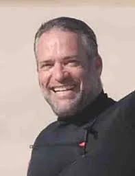

כפר עזה
צדיקביץ' עומר ז"ל
מנהל מערכות המידע של המועצה, איש ים וגלישה
סיפור חיים
עומר צדיקביץ׳ ז״ל, בן דינה ויואל, נולד ב־7 במרץ 1973. הוא גדל בצעירותו באשדוד, והיה חלק בלתי נפרד מקהילת הגולשים בעיר.
הים היה אהבת חייו של עומר - מקום של חופש, שמחה, נשימה ותנועה. הוא היה גולש בנשמתו, ובכל הזדמנות יצא אל הים, בארץ ובעולם, בחיפוש אחר הגל המושלם.
עומר היה אדם שמח, אופטימי וחייכן. איש של משפחה, ים, קהילה ואנשים. הוא אהב לארח, לשמוח, ליהנות מהחיים ולהפיץ סביבו אור, רוגע ומאור פנים.
את אהבתו לים ולגלישה העביר גם לילדיו. הוא לימד את ארבעת ילדיו לגלוש, יצא איתם לים בכל הזדמנות, וראה בגלישה דרך להיות יחד, ליהנות מהחיים ולחוות רגעים של חופש ואושר.
עומר היה גם צלם מוכשר, אדם סקרן ואוהב עולם. הוא טייל רבות, תיעד רגעים, נופים ואנשים, צילם וערך סרטים, וחיפש תמיד את היופי הפשוט שבחיים.
לצד אהבתו לים, היה מחובר מאוד לביתו ולקהילת כפר עזה. הוא חי בכפר עזה במשך יותר מ־25 שנה, גידל שם את ילדיו, ובמו ידיו בנה את ביתו בקיבוץ.
במועצה האזורית שער הנגב שימש עומר כמנהל המחשוב. הוא מילא את תפקידו במקצועיות, בכישרון ובסבלנות אין קץ. הוא טיפל בכל עניין במאור פנים ובחיוך, והיה כתובת זמינה, רגועה וטובה לכל מי שנזקק לעזרתו.
בני משפחתו סיפרו עליו שהיה אדם עם שמחה טהורה, איש אוהב ואהוב, חם, דואג ומסור. אבא שהעניק לילדיו אהבה אינסופית, דאג להם, הגן עליהם, וגידל ארבעה ילדים גולשים כמוהו.
עומר אהב את כפר עזה, את קהילתו ואת עבודתו בשער הנגב. הוא היה איש של אחריות, של נוכחות שקטה ושל עשייה. גם בשעת חירום, מתוך תחושת שליחות, היה רגיל לצאת ולסייע למועצה ולתושבים.
שבעה באוקטובר והימים שאחריו בבוקר שבת, שמחת תורה תשפ״ד, 7 באוקטובר 2023, חדרו מחבלים לקיבוץ כפר עזה במסגרת מתקפת הטרור הרצחנית על יישובי עוטף עזה.
עם תחילת המתקפה, פעל עומר כפי שנהג לעשות בשעת חירום. הוא יצא מביתו לכיוון רכבו כדי לנסוע אל מקום עבודתו במועצה האזורית שער הנגב, מתוך תחושת אחריות ותפקיד.
בדרכו לרכב נרצח עומר על ידי מחבלים בקיבוץ כפר עזה.
עומר צדיקביץ׳ נרצח בכפר עזה בכ״ב בתשרי תשפ״ד, 7 באוקטובר 2023. בן 50 היה במותו.
הוא הובא למנוחת עולמים בבית העלמין המקומי בקיבוץ כפר עזה.
זיכרון ומילים מהלב עומר נזכר כאדם שמח, אופטימי וחייכן; איש משפחה מסור, אב אוהב, בן, אח, חבר ואיש קהילה. אדם של ים, גלישה, צילום, טיולים, משפחה וחיים פשוטים וטובים.
חבריו ובני משפחתו תיארו אותו כאדם שנגע בלב רבים בחיוך, בסבלנות ובמאור פנים. מי שתמיד ידע לעזור, להרגיע, למצוא פתרון, ולהיות שם עבור האנשים שסביבו.
לאחר הירצחו הזמינו חבריו ובני משפחתו את הגולשים ומכריו למעגל גולשים באשדוד לזכרו - מחווה לאיש שאהב את הים, את החופש, את הגלים ואת האנשים שסביבו.
עומר הונצח גם בטורנירים, דפי זיכרון ויוזמות קהילתיות שמספרות את סיפורו וממשיכות את אהבתו לחיים, לים, למשפחה ולקהילה.
זכרו נותר חי בלב ילדיו, אימו, אחיו, משפחתו הרחבה, חבריו, קהילת כפר עזה, עובדי המועצה האזורית שער הנגב וקהילת הגולשים שזוכרת אותו באהבה גדולה.